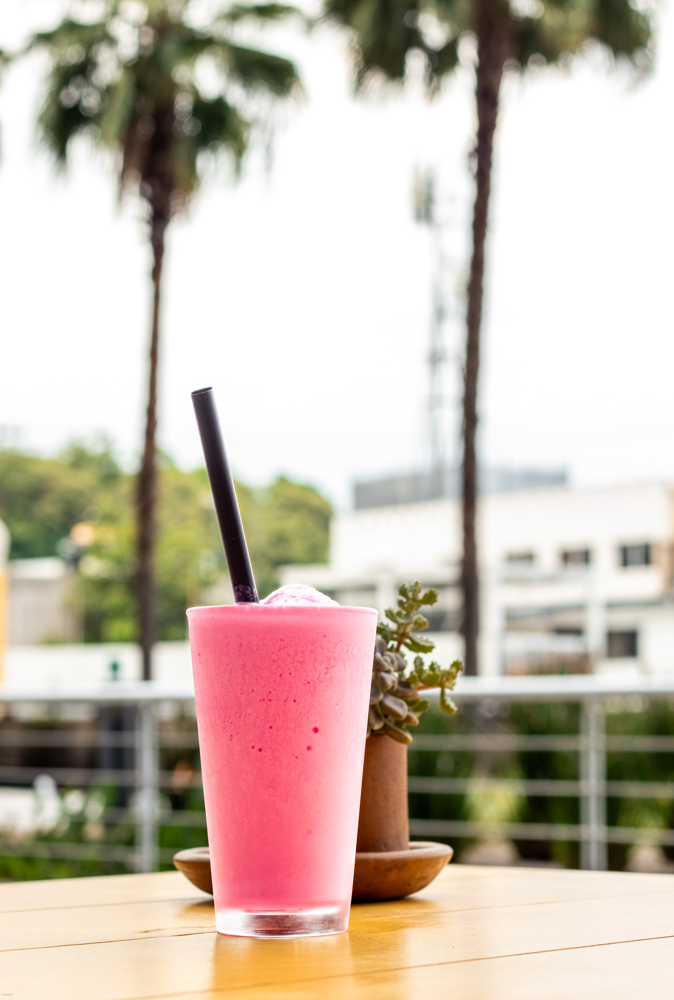

Es el sueño realizado por tres apasionados de la cocina y la hospitalidad en Cuernavaca. Fusionamos tradición familiar e innovación culinaria para ofrecer una experiencia única. Valoramos la calidad en cada detalle, desde ingredientes frescos hasta un servicio personalizado, superando expectativas con sabores auténticos.
Únete a nosotros y disfruta de momentos memorables donde la pasión por la cocina se une con la calidez familiar.

Misión
En Las Ninfas Restaurante nos dedicamos a crear un espacio donde la magia de la gastronomía se encuentre con la calidez de un ambiente familiar. Nuestro compromiso es ofrecer a nuestros clientes platos exquisitos preparados con ingredientes frescos y de la más alta calidad, inspirados en recetas tradicionales con un toque creativo.

Visión
Nos esforzamos por ser reconocidos por la calidad excepcional de nuestros platos y bebidas, así como por nuestro servicio impecable y atención al detalle. Nos vemos como un lugar donde los clientes encuentran un oasis de sabores auténticos y momentos memorables, en un ambiente que refleja nuestra pasión por la cocina y el bienestar de nuestros comensales.

Objetivo
- Excelencia en la calidad.
- Crecimiento y expansión.
- Satisfacción del cliente.
- Innovación culinaria.
- Sostenibilidad.
- Desarrollo del equipo.
- Compromiso comunitario.